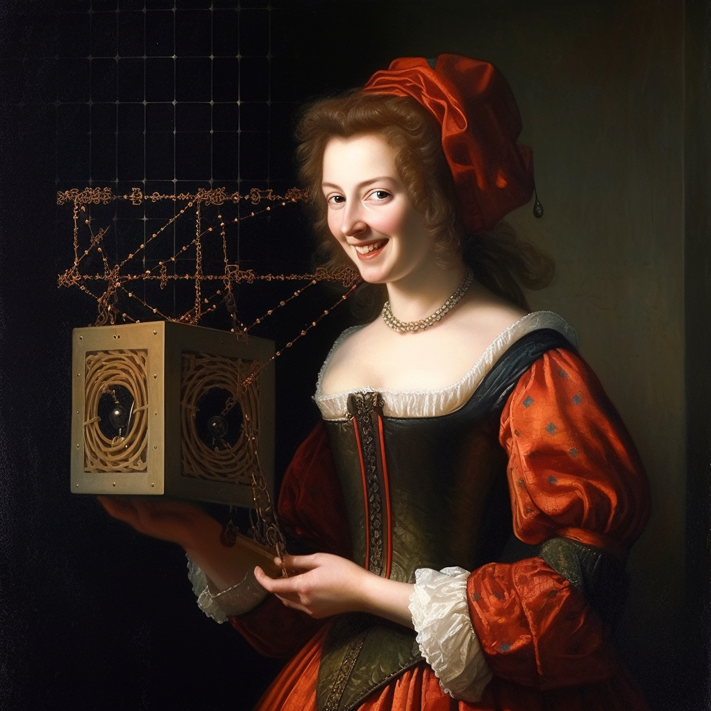

What are embeddings?
A thing from Vicki Boykis
If you go to the Museu Pablo Picasso in Barcelona, you will see most of the famous artist's early works. They don't look anything like we think of when we think of Picasso. His early works, all painted before he was 16, are carefully constructed displays of his technical genius, only as a classical painter.
Some particularly prominent examples are "Science and Charity" and "First Communion", which was completed when the artist was just fifteen. One of my favorites is "Portrait of the Artist's Mother", from 1896, where you can see both the artist's immense talent and his ability to harvest all his energy to draw in the classical style.

In order to get to the level of technical abstract mastery that we associate Picasso with today, he had to put in a lot of time mastering fundamental methods and techniques that then allowed him to fully express himself on his terms.
The same is the case with machine learning approaches. There's a whole universe of exciting developments at the forefront of large language models, but if we don't understand the historical context and fundamentals of how we get from a word to a BERT representation, we will not be able to fully riff on them, and the machine will control us, other than the other way around.
A few years ago, after hearing so much about embeddings, but not a lot about what they actually were, I decided to dive into a long project to understand them, and, in the process, understand the fundamental building blocks of machine learning and natural language processing, particularly as they relate to the context of use in recommendation systems today.
Something else Picasso left us with was the quote, "When art critics get together they talk about Form and Structure and Meaning. When artists get together they talk about where you can buy cheap turpentine," and it's my hope that this document is not only an introduction to the theory around embeddings, but also places them fully in living, breathing business and engineering context so that engineers, PMs, students, and anyone looking to learn more about fundamentals finds it useful. Machine learning, like all good engineering and like good art, is ultimately, also a beautiful craft made up of patterns, and I hope you find as much joy in exploring them as I did. Good luck!